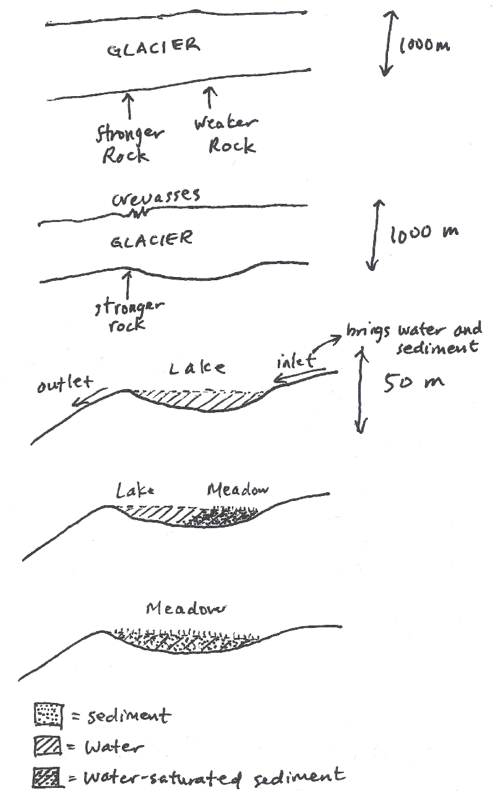
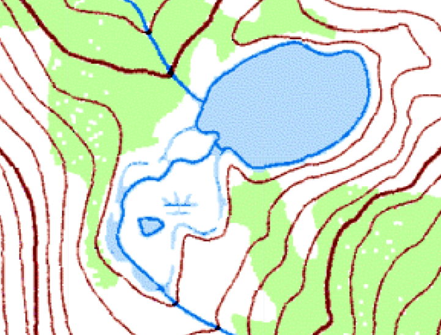
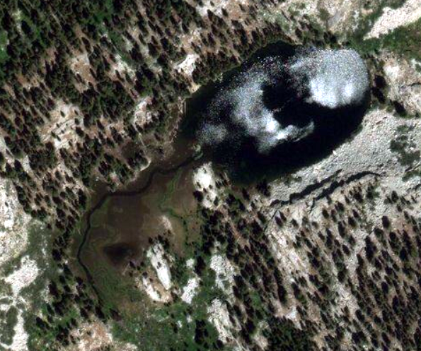

Subalpine and Alpine Meadows
I am so sorry that I do not have any sources for this - I totally should. I just read about it somewhere and decided to write it up, but I've totally forgotten where I read it!Meadow formation steps
- A lake is formed by glacier activity. (Glaciers can carve depressions into the bedrock that fill up with water when the ice leaves.)
- The lake begins to fill up with fine-grained sediment carried from the streams feeding the lake.
- Eventually, the lake is filled with sediment. The sediment is saturated with water, since the sediment remains beneath the water table. Now it is a wetland meadow, where trees can't grow because there is too much water.
- (Later, this meadow could also become forested as a result of tree encroachment.)

An example

This is Lake ~9625, the lowest of the Sphinx Lakes in the Kings Canyon National Park. It's a lake that's slowly becoming a meadow:

USGS image (water flow is from bottom to top)

Satellite image (Bing Maps)
As you can tell from the maps, this is approximately stage 4 in the schematic. Soon there will be no more lake left!